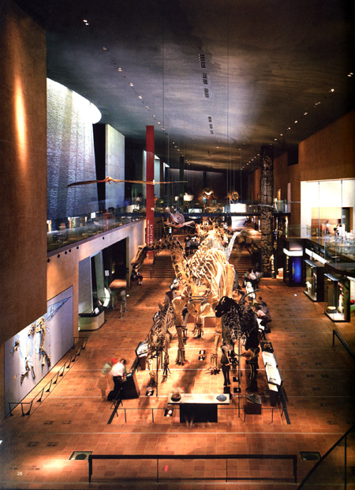

|
◇ インキュベーター・ミュージアム  |
| ■DATA | |
| 名称／ | いのちのたび博物館（北九州市立自然史・歴史博物館） |
| 所在地／ | 北九州市八幡区 |
| 主用途／ | 博物館 |
| 建築主／ | 北九州市 |
| 設計担当／ | 総括：安東直 建築：野原啓司、児玉眞理 構造：嵐山正樹、金谷憲司、奥野親正 電気：安藤優彦、中谷光宏 空調・衛生：栗城幹男、久村真司 |
| 施工／ | 建築：日特・チトセJV、熊谷・新日鐵・山九JV 電気：日鉄・淵脇・中川JV 空調・衛生：エルゴテック・協和・佐野JV 昇降機：日立製作所 |
| 構造／ | SRC、RC、S造 |
| 階数／ | 地上3階 地下1階 |
| 面積／ | 敷地：15,443m2 建築：8,816m2 延床：16,947m2 |
| 竣工／ | 2001年3月 |
| ■ CLOSED |